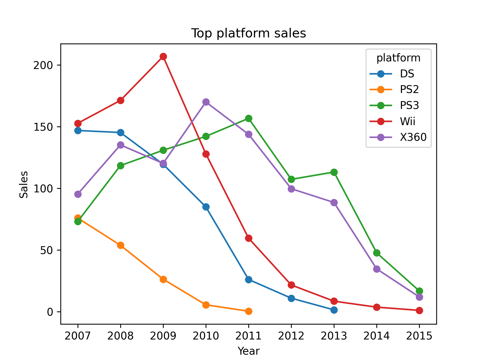
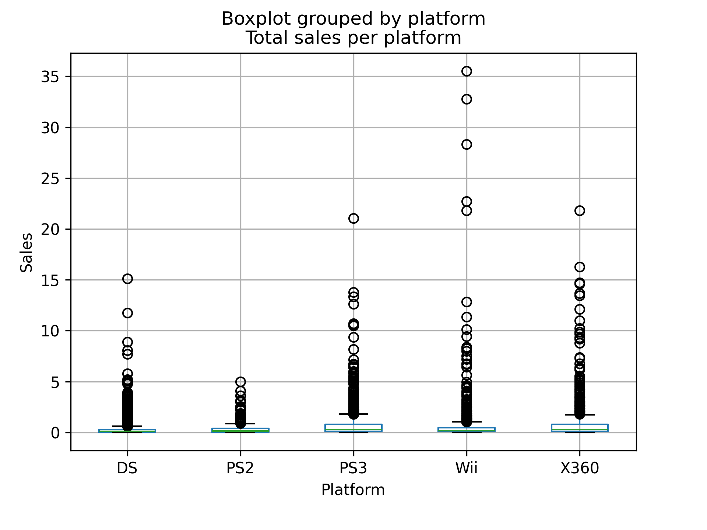
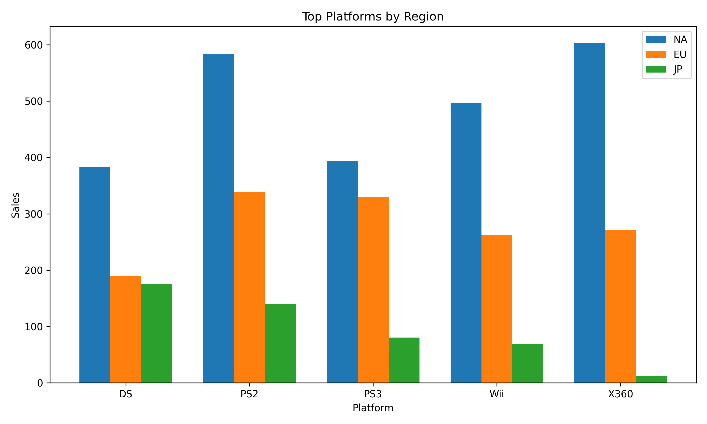

Acerca de mí
Habilidades tecnológicas
Excel | SQL | Python
Habilidades blandas
Comunicación efectiva | Resolución de problemas | Orientación a resultados | Pensamiento analítico | Adaptabilidad | Manejo de presión | Escucha activa
e-mail: sebastianor2099@gmail.com
LinkedIn
Proyectos seleccionados
Análisis de ventas de videojuegos para campaña de marketing
En este proyecto se analiza el comportamiento del mercado de videojuegos a partir de datos históricos de ventas, plataformas, géneros y clasificaciones por edad, con el objetivo de identificar patrones relevantes entre distintas regiones. A través de visualizaciones exploratorias y pruebas estadísticas, se evalúa cómo factores como la región, el tipo de plataforma, el género y la clasificación ESRB influyen en el desempeño comercial y en la percepción de los usuarios, con el fin de extraer conclusiones útiles para la toma de decisiones estratégicas para futuras campañas publicitarías de la tienda online Ice.
Herramientas y tipo de proyecto


Preguntas clave:
- ¿Qué variables explican mayores ventas globales?
- ¿Qué plataformas y géneros ofrecen mayor potencial de crecimiento?
- ¿Cómo varían las preferencias por región?
- ¿Las reseñas predicen el éxito comercial?
Metodología
- Preparación de datos: Limpieza y estandarización para asegurar consistencia en el análisis de ventas, reseñas y plataformas.
- Análisis de ventas: Evaluación de variables clave (plataforma, género, reseñas) para identificar qué factores influyen en el éxito comercial.
- Segmentación regional: Comparación de preferencias en NA, EU y JP para orientar estrategias de mercado específicas.
- Validación estadística: Pruebas de hipótesis para confirmar diferencias significativas en calificaciones entre plataformas y géneros.
Insights clave:
- Éxito = consistencia, no pico. Las plataformas más rentables no son las que alcanzan mayores picos de ventas, sino aquellas que mantienen ingresos sostenidos en el tiempo.
- El mercado no cae, se transforma. La caída de una plataforma no implica una contracción del mercado, sino una transición hacia nuevas generaciones.
- Mercado “hit-driven” (alto riesgo). La mayoría de los juegos genera bajas ventas; el mercado depende de pocos títulos altamente exitosos.
- La plataforma define el éxito. Un mismo juego puede tener resultados muy distintos según la plataforma debido a su base de usuarios.
- Diferencias regionales claras (NA/EU vs JP). Norteamérica y Europa presentan mercados similares y de alto volumen, mientras que Japón es más pequeño y altamente específico en preferencias.
- El éxito es multifactorial. El desempeño comercial depende de la interacción entre plataforma, género, región y timing, no de una sola variable.
Recomendaciones:
- Priorizar plataformas con base de usuarios consolidada. Enfocar lanzamientos en plataformas en fase madura para maximizar estabilidad de ingresos, en lugar de depender de plataformas nuevas con adopción incierta.
- Alinear lanzamientos con ciclos de mercado. Planificar campañas y releases considerando transiciones entre generaciones de consolas para aprovechar picos de demanda.
- Diversificar el portafolio de juegos. Reducir el riesgo del modelo “hit-driven” distribuyendo inversión en múltiples títulos en lugar de apostar por pocos lanzamientos.
- Optimizar la selección de plataformas por juego. Adaptar el lanzamiento de cada título a las plataformas con mayor base activa de usuarios para maximizar ventas potenciales.
- Implementar estrategias regionales diferenciadas.
- NA y EU: campañas amplias enfocadas en volumen.
- JP: estrategias específicas alineadas con preferencias locales
- Diseñar estrategias integradas (no aisladas). Tomar decisiones considerando en conjunto plataforma, género, región y timing, en lugar de optimizar una sola variable.
Visualizaciones destacadas
- Ciclo de vida por plataforma: El análisis del periodo 2007–2015 muestra que las ventas de videojuegos siguen patrones consistentes de crecimiento, pico y declive por plataforma. Las caídas individuales de plataformas no implican una contracción inmediata del mercado, sino una transición hacia nuevas generaciones de consolas. Esto indica que el mercado se mantiene activo mientras exista relevo tecnológico, y que la clave no es identificar plataformas específicas, sino reconocer en qué fase del ciclo general se encuentra la industria para tomar decisiones comerciales oportunas.

2.Ventas globales por plataforma: La mayoría de los juegos presentan ventas bajas en todas las plataformas, con distribuciones fuertemente sesgadas hacia valores pequeños. Las diferencias entre plataformas se manifiestan principalmente en la dispersión y en la presencia de valores atípicos, lo que indica que el desempeño comercial depende de pocos títulos extremadamente exitosos. Las ventas promedio se mantienen bajas y similares entre plataformas, por lo que el mercado presenta un alto nivel de riesgo y dependencia de éxitos puntuales.

- Consolas populares a nivel global por region: Aunque las plataformas fueron seleccionadas por su éxito global, su desempeño no es uniforme por región, mostrando variaciones claras en qué mercado impulsa sus ventas. Incluso al trabajar con plataformas globalmente exitosas, es necesario adaptar estrategias por región, ya que el mercado que impulsa el rendimiento puede variar significativamente.
